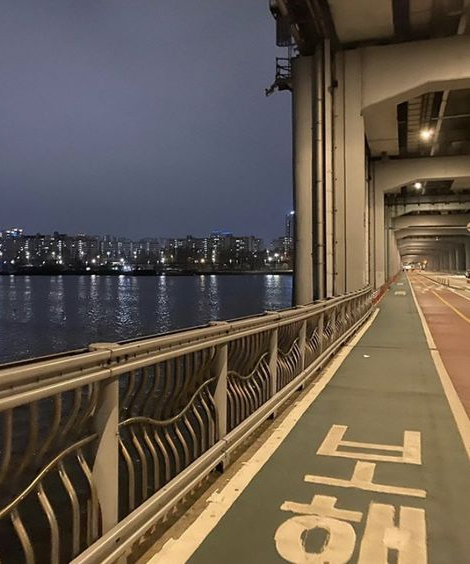

-
[ 뛰기 싫어하는 나도 뛰고 싶은 잠수교 ]
- 
@jjuho:
추천이유
장마에 잠기는 곳이라고만 생각했는데...
막상 가보니 외국에 온 느낌에 쭉 뻗은 곳을 보니
나도 모르게 뛰게 되는 장소다.
저녁에 가면 가끔 버스킹하는 사람이 있어 외롭지 않다.
러닝 후 고터까지 걸어가서 밥 먹고 집에 가면
하루를 보람차게 보낸 것 같은 착각(?)이 든다.
MAP
-잠수교-